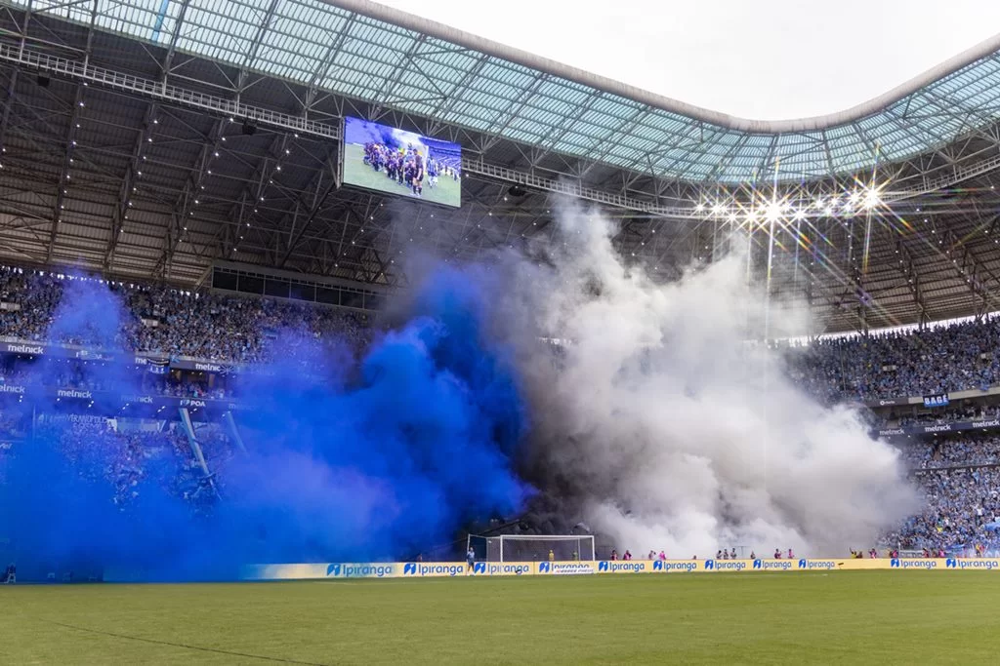
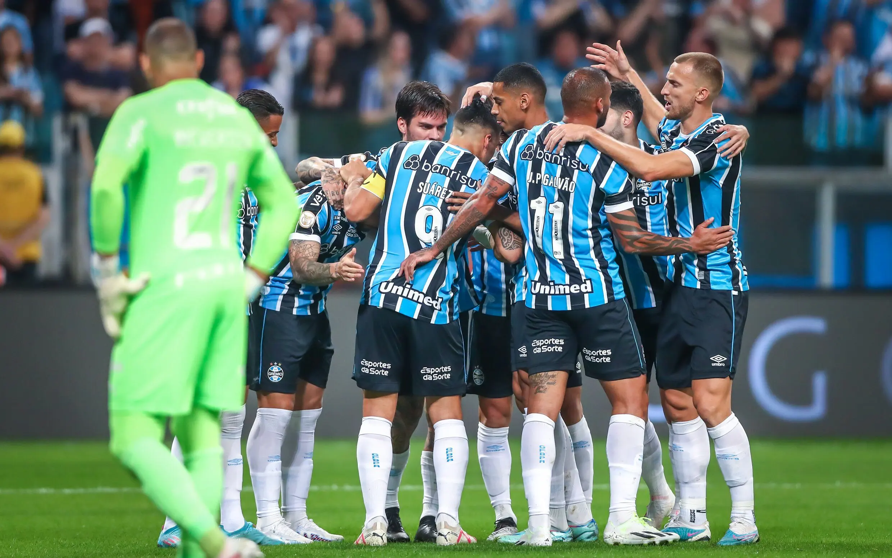
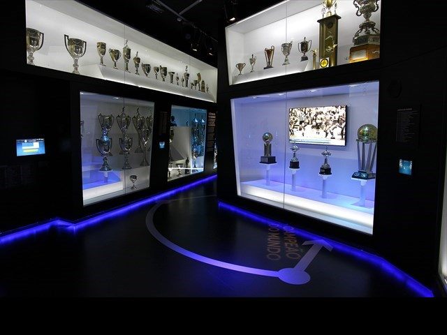

O Grêmio Foot-Ball Porto Alegrense é um clube de futebol brasileiro da cidade de Porto Alegre, no Rio Grande do Sul, fundado em 15 de setembro de 1903 por um grupo de 32 fundadores que elegeu Carlos Luiz Böhrer como seu primeiro presidente. É considerado um dos maiores clubes do Brasil e da América do Sul.
Nome: Grêmio Foot-Ball Porto Alegrense
Arena/Estádio: Arena do Grêmio
Capacidade: 55.662 torcedores
Alcunhas: Tricolor dos Pampas; Imortal Tricolor; Tricolor Gaúcho; Rei de Copas; Clube de Todos
Competição: Campeonato Brasileiro - Série A; Campeonato Gaúcho - Série A; Recopa Gaúcha; Copa do Brasil
Mascote: Mosqueteiro


